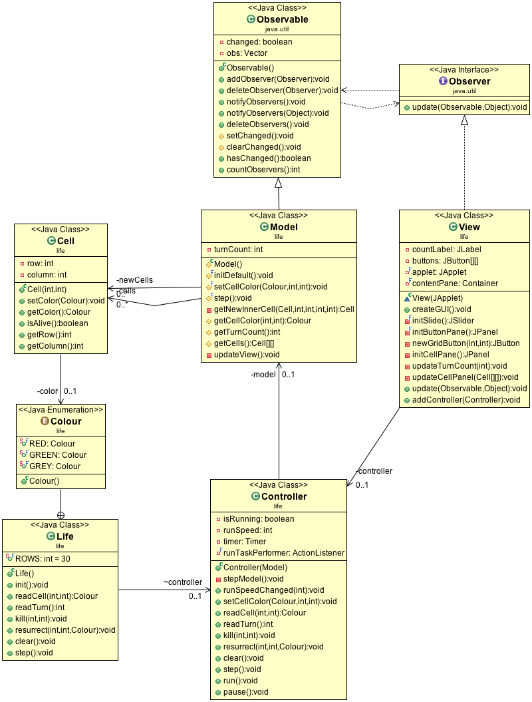

Model View Controller
This game implementation employs the Model View Controller (MVC) design pattern, which decouples the GUI from the rest of the program. This page disscusses the implementation of the MVC pattern in the Game of Life.
Justification of Choice
MVC is chosen as the underlying design pattern because of the following reasons.
- Firstly, MVC design pattern allows for multiple views that rely upon a single model. This reduces the code required to add new views. This makes MVC a useful design pattern to master. Therefore, time and effort spent in implementing a MVC program is worthwhile.
- Secondly, since the model is self-contained and separated from the controller and the view, it is much easier to change the data layer or the game rules. As a result, incremental development of the game rules is possible.
- Thirdly, MVC gives a neat and clean structure for the program. This makes codinig and debugging process easier and more pleasant.
Design Components
- Model
-
- stores the colours of the grid cells and turn count
- provides methods for accessing and modifying the cell colours and turn count according to the game rules
- notifies the view of change
- View
-
- produces the GUI representation of the model
- provides methods for updating according to the lastest data from the model
- creates a platform for user interaction and calls the relevant methods in the controller with user input
- Controller
-
- manages event-processing from the messages passed from the view
- maps user input into actions on the model
Component Interaction
Figure 1 illustrates the interaction between the MVC components.
 |
{kind=link}
In actual implementation, view is registered as an Observer of the model so the model can notify its observers of change without knowing who they are. Thus the model is reusable.
Moreover, the view calls the relevant methods in the controller when there is user interaction on the GUI. The controller then calls relevant methods to access or modify the data in the model. An instruction loop is thus established.
See details below.
Program Structure
Figure 2 illustrates the structure of the program.
|  |
Model Model.java
Model
stores the colours of the grid cells and the turn count. provides methods for accessing and modifying the cell colours and turn count according to the game rules
Methods
initDefault()
,
setCellColor()
and
step()
are used for modifying the stored state of the model.
Furthermore, methods
getCellColor
,
getTurnCount()
and
getCells()
are used for accessing the stored state of the model.
Class
Model
is a subclass of
java.util.Observable
.
This allows
the model to add observers and later emit notices of change to the registered observers.
public class Model extends java.util.Observable
updateView()
is called whenever the model modifies the data and needs
to update the view.
notifyObservers(getCells())
notifies the model's observers
of change and pushes the model's status to the view.
It passes the grid cells stored in the model as a parameter. This allows the view to update
the GUI according to the latest data.
javax.swing.SwingUtilities.invokeLater()
is used here
for arranging the GUI update code to be called on the event dispatch thread.
See Threading with Swing (ctd):
SwingUtilities.invokeLater() for explanation.
private void updateView() {
setChanged();
try {
javax.swing.SwingUtilities.invokeLater(new Runnable() {
public void run() {
notifyObservers(getCells());
}
});
} catch (Exception e) {
System.err.println("View update didn't successfully complete");
}
}
Note
The model does not have references to where the notices are sent or from where it will accept the command, i.e. the view(s) and the controller. This makes the model reusable for developing mutiple views.A non-reusable piece of code Life.java tells model to send notices to view and to accept commands from controller.
View View.java
View
initialises the GUI and maintains it by pulling the latest
data from the model upon notice and calling the relevant methods in the controller
with the user input.
Class
View
implements
java.util.Observer
.
This allows the view to obtain the updated state of the model through the method
update(Observable, Object)
whenever the model notifies the obervers of change.
public class View implements java.util.Observer
update(Observable, Object)
is called whenever the model calls
updateView()
. It pulls data from the model and update the GUI accordingly.
applet
is a reference to
Life
which extends
JApplet
. This is where the GUI is displayed.
@Override
public void update(Observable object, Object arg) {
Model model = (Model) object;
updateTurnCount(model.getTurnCount());
updateCellPanel((Cell[][]) arg);
applet.validate();
}
addController(Controller)
is a method that stores a reference of the
Controller
.
When the view knows the controller, it can then call the relevant methods in the controller
when there is user interaction on the GUI.
For example, when a function button is clicked, the
ActionListener
calls the corresponding method in the controller to act accordingly.
// when a function button is clicked
@Override
public void actionPerformed(ActionEvent event) {
// the button pressed
final JButton sent = (JButton) event.getSource();
// the button's label
final String label = sent.getText();
if (label.equals("Run")) {
sent.setText("Pause");
controller.run();
} else if (label.equals("Pause")) {
sent.setText("Run");
controller.pause();
} else if (label.equals("Clear")) {
controller.clear();
} else if (label.equals("Step")) {
controller.step();
}
}
Note
The view needs to know the methods in the model that return the stored data. It also needs to know the controller and the methods in the controller which will act upon the different user input.Controller Controller.java
The
controller
provides methods for accessing or modifying the stored
data in the model.
The
controller
also provides methods which can be called by a view to perform
action upon user interaction on the view.
Moreover, the
controller
has a
Timer
which can be used
by the view when there is a change in the run speed. The deactivation of funtional buttons
when Run is called is also implemented in this class.
Note
The controller keeps a reference of the model so it can instruct the model to modifty the data stored. The controller does not have a reference of the view. The methods it provides can be called by multiple views which need action upon user interaction. Therefore, the controller is reusable for multiple views of the same model.Life Life.java
This piece of code initiates the MVC and establishes the links between the components.
// called by the html page to initilise the applet
public void init() {
// creates the MVC
Model model = new Model();
final View view = new View(this);
controller = new Controller(model);
// tells model about view
// model will notify view of changes
model.addObserver(view);
// tells view about controller,
// view will notify controller of user actions
view.addController(controller);
// Execute a job on the event-dispatching thread:
// creating this applet's GUI.
try {
javax.swing.SwingUtilities.invokeAndWait(new Runnable() {
public void run() {
// initialises the View
view.createGUI();
}
});
} catch (Exception e) {
System.err.println("createGUI didn't successfully complete");
}
} // end of init
It also serves as an interface with some given methods to access or modify the grid cells which call the corresponding methods in the controller. The controller then instructs the model to carry out the actions.
Pros & Cons
This implementation has the following advantages and disadvantages.
Pros
- Easy addition of new view
-
When adding a new view, we only need to add a few lines in Life.java. Firstly, we create an instance of the new view. Secondly, we add the new view as an observer of the model. Thirdly, we store a reference to the controller in the new view. Finally, we initialise the new view.
As a result, minimum modification to the original code is required.
- Flexibility in new view
-
This MVC implementation allows for the flexibility to add new functionalities in a new view for the same model.
For example, it is possible to add a functional button
Step*10that performs 10 steps upon clicking. We just need to add a new method in the controller that performs 10 steps and then get the button ActionListerner to call this method.Such code addition will not affect the compatility of the existing views because the controller methods used by those views are not changed.
This flexibility is very useful when the new view is vastly different from the exsiting ones.
Cons
The main disadvantage of this implementation is that each view needs to know the methods in the model which return the cells and the turn count. Each view also needs to know the specific controller method to call for each user interaction.
This makes the views non-resusable because they involve calling methods specific to the current model and controller only.
Conclusion
In conclusion, this implementation of the Game of Life enables easy addtion of a new view and is flexible with a new view's functional options. Since the spirit of a MVC pattern lies in allowing multiple views to rely upon a single model, this implementation meets the basic requirement of a MVC pattern and is an effective one.